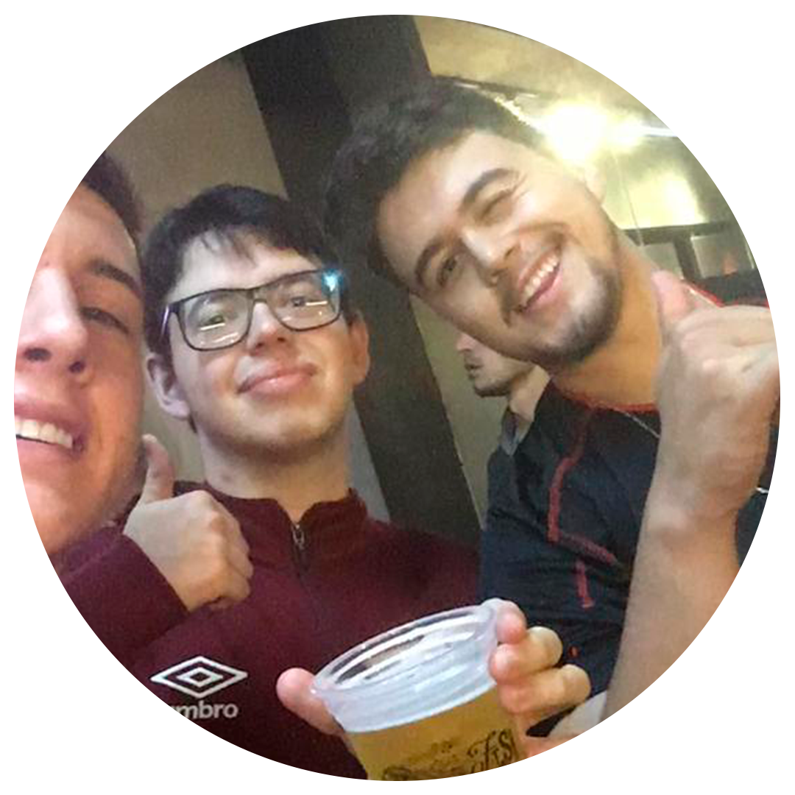
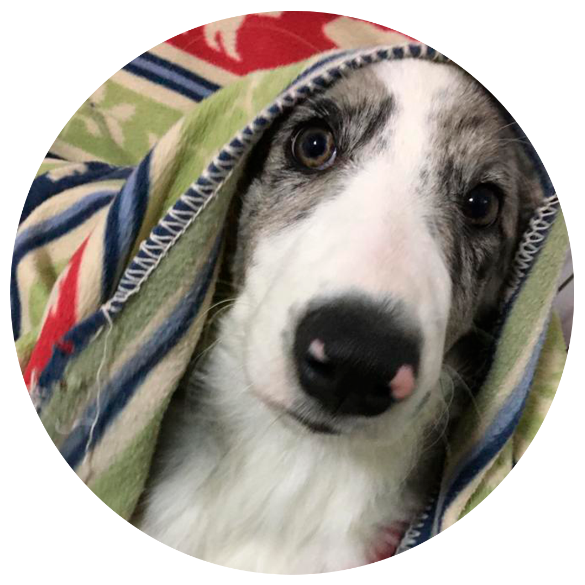

SOBRE MIM!
Meu nome é Guilherme Terezin , tenho 17 anos, nasci em curitiba mas moro em Campo Largo, estou cursando ciência da computação na puc e estou gostando muito, meu time de coração é o athletico paranaense, sou athleticano roxo, meu instagram é @gui.terezin , não posto muita coisa nas redes sociais mais tenho porque eu gosto, tenho uma cachorrinha chamada meg de 7 meses da raça border collie

